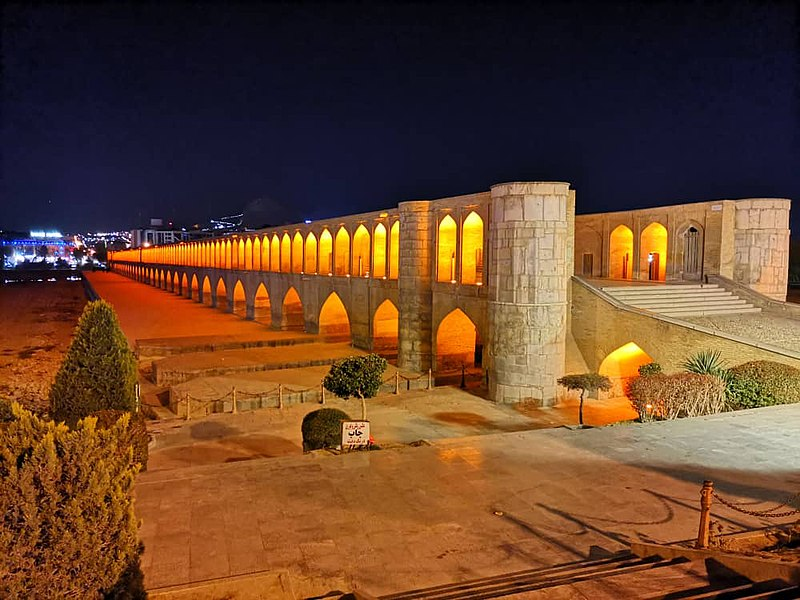
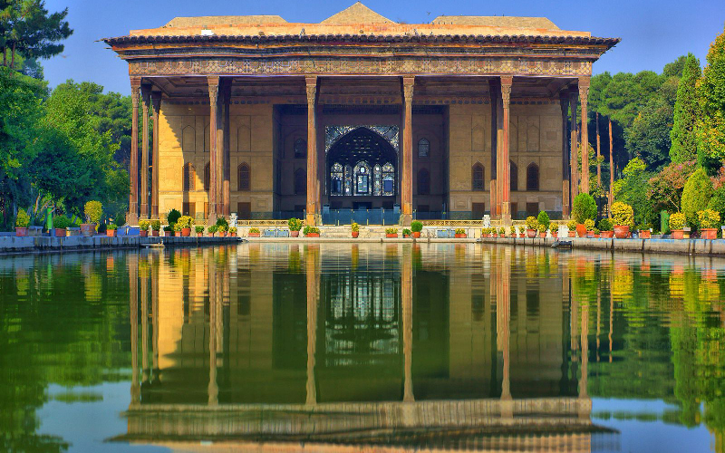

| اصفهان یکی از کلانشهرهای ایران، و مرکز استان اصفهان و نیز شهرستان اصفهان است. اصفهان با سه میراث جهانی یونسکو، سومین شهر پرجمعیت ایران پس از تهران و مشهد، یکصد و شصت و پنجمین شهر پرجمعیت جهان و نهمین شهر پرجمعیت غرب آسیا بهشمار میرود. اصفهان چهاردهمین کلانشهر پرجمعیت خاورمیانه است. کلانشهر اصفهان با ۱۵ منطقه شهری، پس از تهران دومین کلانشهر بزرگ ایران از نظر مساحت شهری است. شهر اصفهان کلانشهری بوده که نامش همواره در کنار رودخانه زایندهرود میآید. |  |
|  | کاخ چهلستون اصفهان از بناهای تاریخی اصفهان است. کاخ چهل ستون که بالغ بر ۶۷۰۰۰ متر مربع مساحت دارد، در دوره شاه عباس یکم احداث آن آغاز شد و در وسط آن عمارتی ساخته شده بود. شاه عباس اول، کوشکی در میان باغ بنا نهاد که این کوشک هسته اولیه کاخ را تشکیل داد که تالار میانی کاخ چهل ستون و غرفههای چهار گوشه آن را در بر میگرفت. در سلطنت شاه عباس دوم، ساختمان تکمیل شد و در ساختمان موجود مرکزی، تغییرات کلی داده شدهاست و تالار آینه، تالار ۲۰ ستون، دو اتاق بزرگ شمالی و جنوبی تالار آینه، ایوانهای طرفین سالن پادشاهی و حوض بزرگ مقابل تالار با تمام تزیینات نقاشی و آینهکاری و کاشیکاری دیوارها و سقفها افزوده شدهاست. در ابتدا بهجای آینه نقاشیهایی وجود داشته ولی بعد از آتش گرفتن کاخ و به هنگام پاکسازی آن از دوده قسمتی از سقف ایوان را آینههایی از نقره بهجای جیوه استفاده کردند. |